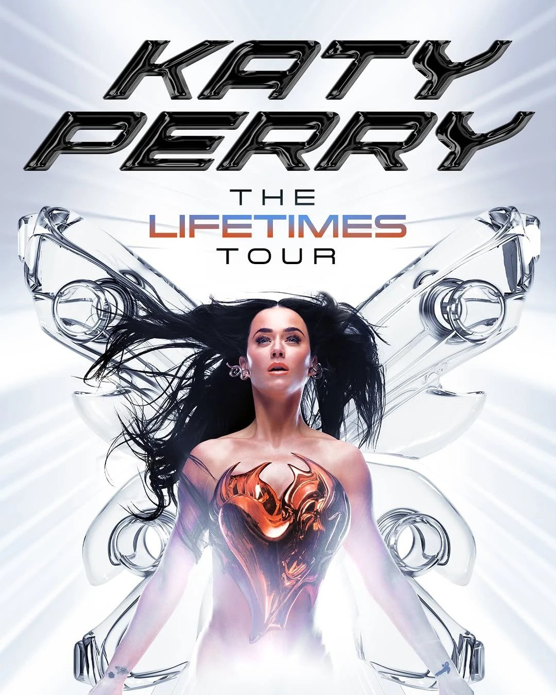

In the music industry, understanding your audience goes beyond tracking sales, streams, and social media engagement. While these metrics are valuable resources and can provide useful behavioral insights, they don’t always reveal the whole story. Music marketers can explore what drives fans’ decisions while measuring their preferences through qualitative and quantitative research. Selecting the appropriate research method begins with recognizing what questions need to be answered, allowing marketers to develop campaigns and strategies that better align artists with their audience.
Listening Beyond the Music
Qualitative research focuses on understanding the underlying emotions, reasons, and motivations behind consumer behavior. With this methodology, music marketers are able to explore fan experiences beyond the numerical data; they do so through interviews, focus groups, and observations.
For instance, during One Direction’s 1D Day event in 2013, fans had the opportunity to step inside a Londonesque telephone booth and listen to the band’s upcoming album, Midnight Memories. This was a particularly exciting and memorable segment that had the potential to strengthen the relationship between fans and their favorite artists. Additionally, it presented an opportunity to explore how qualitative research can work to marketing’s advantage. Interviewing participants about their initial opinions, emotions, and overall experience could help artists and marketers understand the significance of an exclusive listening event and how it influences the artist-fan dynamic.
Let the Numbers Speak

On the flip side, quantitative research focuses more on collecting and analyzing numerical data in order to pinpoint patterns, measure consumer preferences, and evaluate their behaviors. With this type of research, music marketers can gather measurable insights that help guide their marketing strategies; they do this through surveys, polls, and other structured research studies.
This approach can be seen during Katy Perry’s Lifetimes Tour in 2025; concertgoers were encouraged to scan a QR code and vote for songs from a specific era that they wanted her to perform live. The “Choose Your Own Adventure” segment allowed fans to participate in shaping the experience while providing data on their musical preferences. By analyzing the voting results in real time, marketers could identify which songs or eras received the most votes, compare that data to other tour stops, and gain insight into what resonates the most with participating fans. With these findings, music marketers and artist personnel can make more informed decisions regarding future setlists, promotional strategies, and fan engagement initiatives.
Ultimately, qualitative and quantitative research offer different perspectives on fan behavior, but they are equally valuable. While one explores the motivations behind a fan’s decisions, the other provides measurable insights into their actual preferences. It’s important for music marketers to select between these research methods depending on the questions they are trying to answer and the insight they hope to gain. By understanding when and how to apply each approach, they can develop more intentional strategies backed by evidence rather than assumptions.
After all, in an industry heavily driven by numbers, working to understand the people behind those numbers may be the most valuable insight of all.